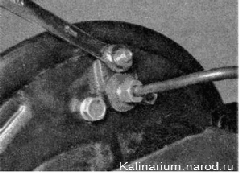
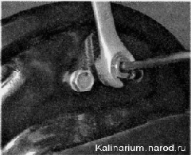
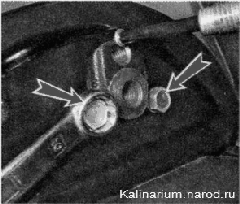

Рабочий тормозной цилиндр заднего тормозного механизма - заменаЗаменяем цилиндр при подтекании тормозной жидкости и при «закисании» поршня (поршней) в цилиндре, в результате чего один или оба поршня перестают перемещаться в цилиндре. Для выполнения работы потребуется специальный ключ для штуцеров прокачки рабочих цилиндров и штуцеров тормозных трубок. Снятие 1. Подготавливаем автомобиль к выполнению работы. 2. Снимаем тормозной барабан. 3. Поднимаем рычаг стояночного тормоза до упора. 4. Снимаем со штуцера прокачки рабочего тормозного цилиндра защитный резиновый колпачок и специальным или накидным ключом на 8 мм выворачиваем штуцер 
5. Обрабатываем штуцер тормозной трубки проникающей смазкой. Предупреждение! При выполнении следующей операции следите за тем, чтобы при отворачивании штуцера трубка не вращалась вместе с ним. Если трубка «закисла» в штуцере, замените ее. 6. Специальным ключом на 10 мм ослабляем затяжку штуцера тормозной трубки. 
7. Окончательно выворачиваем штуцер рожковым ключом на 10 мм. 8. Ключом на 10 мм выворачиваем два болта крепления рабочего цилиндра. 
Установка 1. Очищаем детали тормозного механизма от грязи и ржавчины, обезжириваем рабочую поверхность барабана, незначительное замасливание накладок тормозных колодок устраняем при помощи наждачной бумаги. 2. Устанавливаем новый цилиндр в обратной последовательности. 3. Устанавливаем тормозной барабан. 4. Прокачиваем тормозную систему и убеждаемся в герметичности соединения тормозной трубки с рабочим цилиндром. |